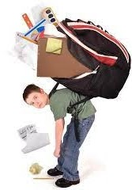
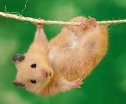
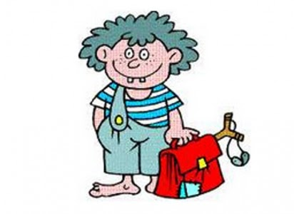
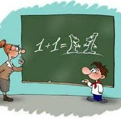

Після уроків

— Мамо, мене вже більше не звуть найгіршим учнем.
— Молодець, синку, ти став краще вчитись?
— Ні. До нас прийшов новий хлопчик, який вчиться ще гірше.
Зараз зрозумієш

- Тату, чому цей фільм заборонено дивитись дітям?
- Сиди тихенько, зараз зрозумієш.
Хитрий Івась

— Івасю, ти вже такий великий, а примушуєш малого Петрика нести і твого портфеля.
— Хай вчиться допомагати старшим.
— Оксано Дмитрівно, ви хотіли бачити моїх батьків?
Я їх приніс, сказав учень і поклав на стіл вчительці фотографії своїх батьків.

— Ти чому запізнився в школу?
— Я хотів порибалити, а батько не взяв мене.
— Правильно зробив. Він, мабуть, пояснив тобі, чому треба йти до школи, а не рибалити.
— Звичайно. Він сказав, що черв’яків мало, на дві вудочки не вистачить.
Сашко запізнився до школи й виправдовується:
— Даруйте, Іване Івановичу, але мама сьогодні проспала.
Чи можна?
— Я люблю літати по школі, як реактивний літак. Це можна?
— Еге ж. Але випадково можна вилетіти зі школи.
Вчителька: — Де живе хом’як?
Учень: — У зоомагазині.